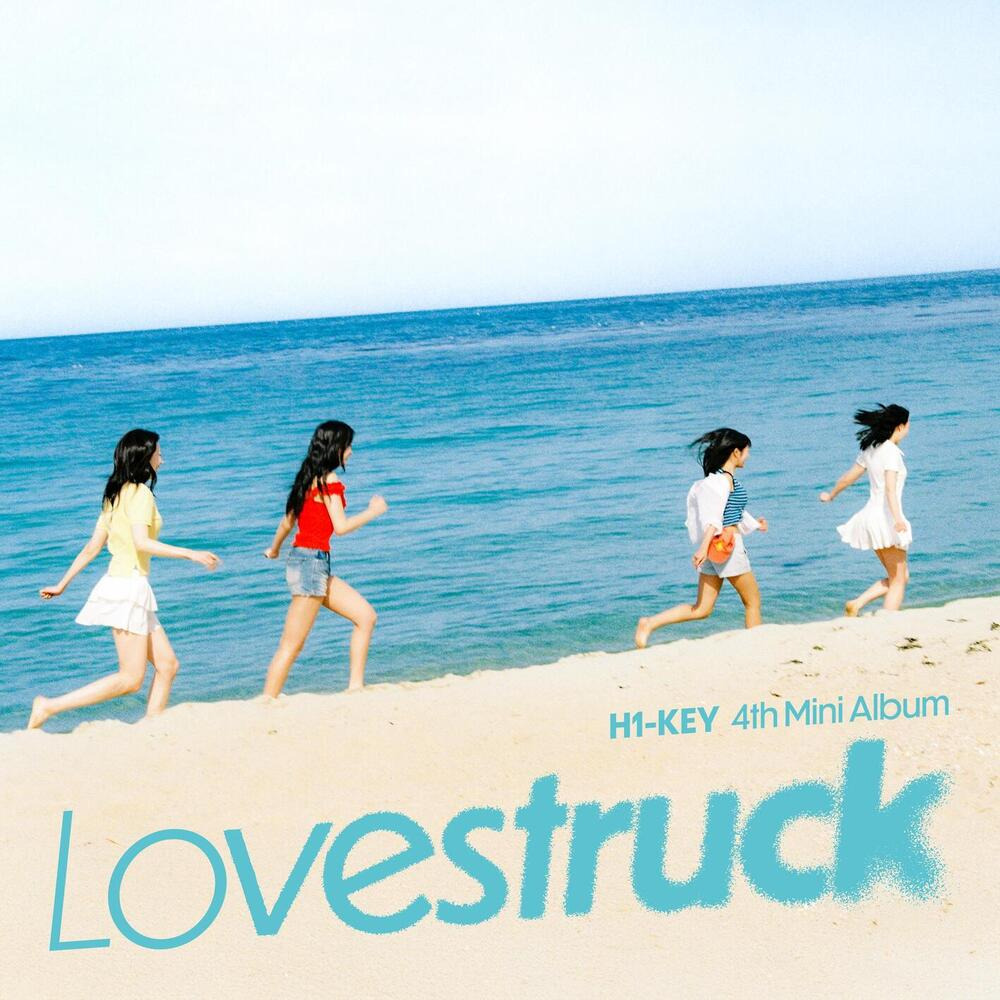

안녕하세요, 라보엠입니다.
오늘은 2025년 여름을 대표하며, 벌써부터 수많은 플레이리스트 상위권을 장식한 하이키(H1-KEY)의 신곡 ‘여름이었다’를 소개합니다. 흔히 여름 하면 떠오르는 설렘, 청춘, 이별, 그리고 그 계절만의 찬란한 순간을 하이키만의 감성으로 녹여낸 이 곡은, 듣는 순간 누구나 일상 속 한여름의 추억으로 빠져들게 만들어줍니다.

하이키 여름이었다 - 하이키 스타일의 여름
‘여름이었다’는 인트로부터 시원한 기타 리프와 강렬한 밴드 사운드가 청량한 에너지를 불어넣는 곡입니다. 빠른 BPM 위로 흐르는 경쾌한 리듬, 그리고 사운드를 뚫고 나오는 파워풀한 가창이 이어지며, 무더운 한낮부터 서늘한 밤까지 여름의 온도차를 그대로 전해줍니다. 특히 이번 곡은 하이키의 보컬과 퍼포먼스가 절정에 이르렀다는 호평을 받고 있습니다. 강렬한 무대 위에서 멤버들은 생동감 넘치는 표정과 의상, 그리고 열정적인 안무로 계절의 뜨거움을 한껏 끌어올립니다.
가사 속에 담긴 청춘의 순간, 여름의 찬란함
뜨거운 여름 하늘 아래 우린
(하늘 아래 우린)
햇살에 젖어 꿈을 꾸었지
(꿈을 꾸었지)
Every moment like a shooting star
너와 나
그 모든 게 빛났던 날
넌 내게
여름이었다
찬란하게
빛난 청춘이었다
뜨겁고 짧았던 그 기억들이
내 삶에 눈부신 한 컷이 되었다
Summer dreams
Summer nights
stars dancing bright
시간이 멈춘 듯한 여름날
Your laughter
a celestial symphony
모래 위에 새겨진 발자국
삐뚤빼뚤 그려낸 약속이
시간이란 파도에 지워졌지만
우리 웃음만은 선명하게 남아
넌 내게
여름이었다
찬란하게
빛난 청춘이었다
뜨겁고 짧았던 그 기억들이
내 삶에 눈부신 한 컷이 되었다
Summer dreams
Summer nights
stars dancing bright
시간이 멈춘 듯한 여름날
Your laughter
a celestial symphony
여름의 끝자락에서
그 시절 우릴 떠올려본다
한여름 밤의 꿈처럼
다시는 돌아갈 수 없지만
넌 내게
여름이었다
찬란하게
빛난 청춘이었다
뜨겁고 짧았던 그 기억들이
내 삶에 한 계절 여름이 되었다
Summer Lights
Summer nights
stars dancing bright
시간이 멈춘 듯한 여름날
Your laughter
a celestial symphony
여름의 끝자락에서 너를 떠올려
미소 지으며 그날을 기억해
넌 내게 여름이었다
영원히 내 마음속 여름이었다
‘여름이었다’의 가사는 우리 인생에서 가장 빛나고 뜨거웠던 순간을 ‘여름’이라는 한 장면에 담아냈습니다. 뜨거운 햇살 아래, 젖은 머리카락, 쏟아지는 별빛 아래 나눴던 소망과 소박한 약속들. “뜨거운 여름 하늘 아래 우린, 햇살에 젖어 꿈을 꾸었지. 매 순간이 유성이었고 너와 나는 모든 게 빛났던 날” 가사 곳곳에서 느껴지는 달콤한 회상과 아련한 그리움이 교차합니다. 화자는 자신의 인생에서 가장 찬란했던 계절, 그 앞에서 함께 걷던 누군가에 대해 이야기하고 있습니다. 이 곡은 사랑, 꿈, 우정 등 각자의 청춘을 관통했던 그 여름을 떠올리게 하며, 이젠 다시 돌아갈 수 없는 순간이지만, 그때의 반짝임만큼은 영원히 남아 있음을 노래합니다. 그리고 마지막에는 “너는 내게 여름이었어. 영원히 내 마음속 여름의 한가운데”라는 감동적인 메시지로 곡을 마무리합니다.
팀의 포부와 메시지
멤버들은 이번 곡을 발표하며 “여름 대표곡이라는 수식어를 갖고 싶었다”고 밝혔습니다. 이전 ‘건사피장’으로 역주행, ‘중소의 기적’이라 불렸던 하이키는 올해에도 또 한 번 새로운 도약을 꿈꾸고 있습니다. 연인을 떠올리게 하는 설렘, 꿈과 우정, 그리고 헤어짐까지 담긴 이 곡으로 “모두의 여름 플레이리스트에 꼭 들어가고 싶다”는 바람이 느껴집니다.
하이키는 이번 활동을 통해 더욱 강렬한 밴드 스타일 퍼포먼스를 선보였습니다. 청량한 크롭톱과 미니스커트, 열정을 담은 완성도 높은 댄스, 그리고 생생한 표정 연기가 어우러져 무대를 더욱 빛나게 만듭니다. 실제로 MBC ‘쇼! 음악중심’을 비롯한 음악방송에서 하이키는 팬들의 환호와 뜨거운 반응을 받으며, 여름 대표 아이돌다운 존재감을 뽐냈습니다.
음원 차트 성적도 눈에 띕니다. 국내외 주요 차트에서 상위권을 기록하며, 하이키만의 ‘여름 대표곡’으로 자리잡았습니다.
맺음말
하이키의 ‘여름이었다’는 무더운 여름의 태양 아래, 가장 빛났던 우리 청춘과 순간들을 아름답게 기록한 곡입니다. 특별한 장치 없이도 누구나 공감할 수 있는 여름의 한복판, 다정하고 아련한 순간을 솔직하게 담고 있습니다. 뜨거웠던 청춘, 사랑의 한가운데, 그리고 다시 만날 수 없는 그 한 사람까지. 그래서 누구나 듣다보면 잊고 있던 소중한 밤, 친구와의 약속, 그리고 첫사랑의 기억까지 떠올리게 됩니다. 오늘처럼 더운 하루 끝, 이 노래로 자신만의 여름을 한 번 떠올려보는 건 어떨까요? 여러분 각자의 ‘여름이었다’가 다시 한 번 가슴 속에서 선명히 그려지길 바랍니다.